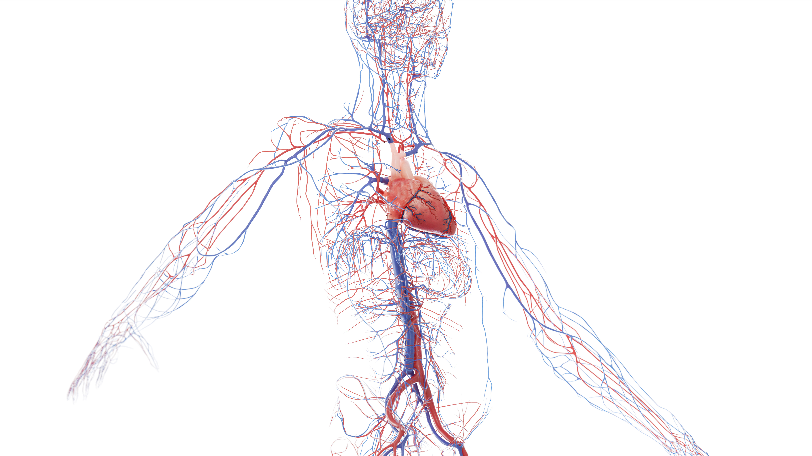
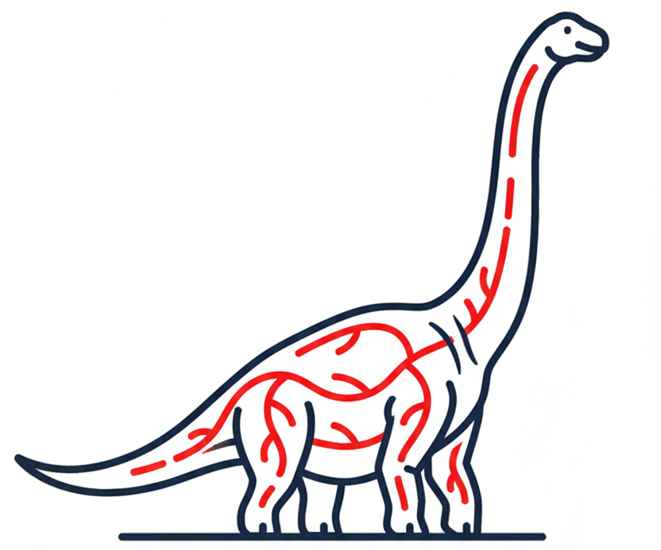
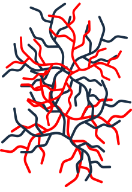
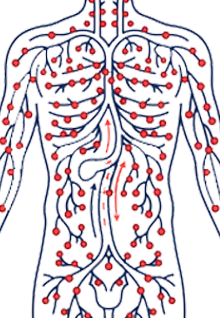
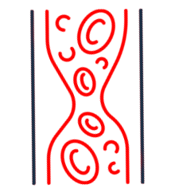
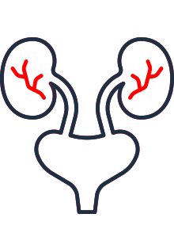
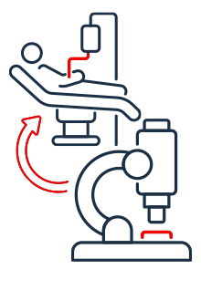
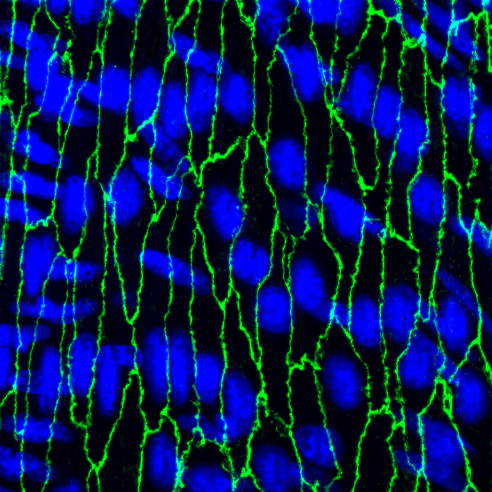

Vascular Communication & Microcirculation
The Isakson Lab at UVA’s CVRC studies how endothelial, smooth muscle, and immune cells communicate within the microcirculation. The goal is to advance our understanding, and identify new pharmacological targets, in disease states where disregulation of microcirculatory function is especially acute, including hypertension and heart failure.
Our lab was the first to publish on pannexins in the vasculature (Circ Res, 2011; Nature Comm 2015) and alpha globin in the endothelium (Nature 2012; J Clin Invest 2018; Nature Comm 2022).
With a plethora of editorials accompanying our work ( e.g., in Nature, Science Signaling, J Clin Invest, and Circ Res ), we feel our ideas have opened multiple new avenues of ideas and translatable products.
Our lab has been recognized with the American Physiological Society Bowditch Award for blood pressure research, and the Robert M. Berne Award for Outstanding Cardiovascular Research and Mentorship
I am completely committed to training and mentoring. I am PI on our long-running Cardiovascular Training Grant T32 and served as Director of Graduate Studies for over 10 years.
Isakson Lab research is focused on:

Extreme Physiology
Extrapolating cardiovascular physiology to dinosaurs and other animals in extreme environments.

Microcirculation in Disease
Linking small-vessel dysfunction to hypertension, stroke risk, and tissue injury.

Lymphatic Function
Studying lymphatics in adipose tissue and heart failure to understand fluid and immune balance.

Inflammation & Vessel Wall
Defining how inflammatory cells interact with endothelium to drive vascular injury.

Iron & ATP Signaling
Probing how iron and extracellular ATP regulate vascular function in the circulation and kidney.

Bench-to-Bedside Translation
From molecular and mouse models to IRB-approved human studies aimed at new therapies.

Latest Publications
Discover our most recent findings in leading journals and see how our work is shaping the future of vascular biology and translational medicine.
Explore PublicationsGet to know the team
Loading team...